It all started in the 50s... Would you believe we started out as a small chain of convenience stores? It’s true. Way back in 1958. We were called Pronto Markets. In ‘67, our founder, the original Trader Joe, changed our name (yes, to Trader Joe’s) and the way we do business.
We made the stores bigger (if you can imagine), decked the walls with cedar planks and donned our crew in cool Hawaiian shirts. Most importantly, we started packaging innovative, hard-to-find, great-tasting foods under the “Trader Joe’s” name. That cut our costs and saved you money. Still does. And that’s important, because “Value” is a concept we take very seriously.
By ‘Value,’ we mean great everyday prices on all of our great products. No sales, no gimmicks, no clubs to join, no special cards to swipe... How do we do it?
We buy direct from suppliers whenever possible, we bargain hard to get the best price, and then pass the savings on to you.
If an item doesn’t pull its weight in our stores, it goes away to gangway for something else.
We buy in volume and contract early to get the best prices.
Most grocers charge their suppliers fees for putting an item on the shelf. This results in higher prices... so we don’t do it.
We keep our costs low — because every penny we save is a penny you save.
It’s not complicated. We just focus on what matters. Great food + Great prices = Value.
Timeline
1960s
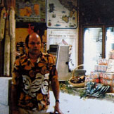
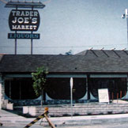
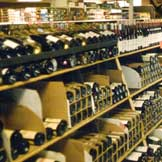
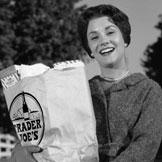
1967
The first Trader Joe’s opened its doors in Pasadena, California. Still there today - same spot, same parking lot.
If you were into wine - especially California wines - Trader Joe’s was the place to go. Still is. But back in the late 1960s, we sold every California wine there was.
1969
The first Hawaiian shirt was worn. Okay maybe it was the second or third...? Well, it was definitely one of the loudest & may have led to the trademark Trader Joe’s attire.
1970
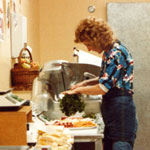
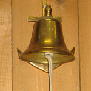
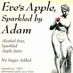
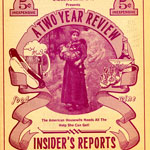
1970s
Trader Joe’s first customer newsletter - “The Insider Report”- was introduced. In it we told stories about wines we sold. Customers coveted it. They even paid 5 cents for it.
1972
We launched the first Trader Joe’s private label grocery product – granola. How down to earth.
1973
“Still trying to find ourselves” - a butcher shop, nuts in barrels, magazines & pantyhose – oh, yes, you could’ve found all of these items at your localTrader Joe’s. (Seriously, pantyhose.)
1975
A decorative maritime bell was used to get someone’s attention – a signature communication system was born.
We started cutting & wrapping cheese for the first time. The stores smelled great.
1976
The first plastic lobster is used as decoration.
1977
Trader Joe’s, Trader Mings, Trader Jose, Trader Giotto, Pilgrim Joe – having fun (as usual) while we expanded our private label concept.
The first reusable “Save-A-Tree” brand canvas bag was introduced at Trader Joe’s. Then re-used. We like to think it’s still being used. We also introduced our first private label organic item - Organic Unfiltered Apple Juice.
1978
We finally stop selling pantyhose. The unencumbered freedom is glorious.
1980s
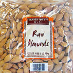
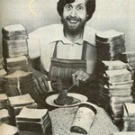
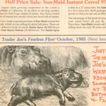
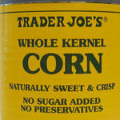
1981
Trader Joe’s was mentioned in a national magazine for our All American Nut Butter. Either it was a pretty slow news week or our nut butter was just that good. (It still is.)
1982
Our private label canned corn was first introduced to our stores. This classic with the original yellow label remains a popular product today (and it only costs a few more cents than it did in ‘82).
1983
While introduced as kitschy décor in 1976, now every Trader Joe’s has a plastic lobster for the finding.
1984
Trader Joe’s hit the airwaves - we started recording our own radio ads where we tell the behind-the-scenes stories about our products with a signature sign off - “Thanks for listening.”
1985
Our newsletter changed from the “Insider Report” to the now iconic “Fearless Flyer,” which is free & still remains the primary form of advertising for us today.
1988
We took our first big leap outside of Southern California into Northern California where we opened a store in the city of San Rafael. And it was a leap year.
1989
We finally stopped packaging up almonds and pistachios in our stores. The growers started shipping them to us pre-packaged, in one-pound bags – a fresh idea for even fresher nuts!
1990s
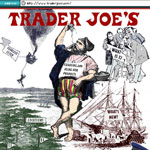
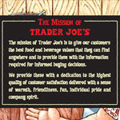
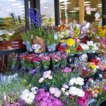
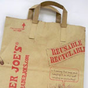
1991
Trader Joe’s Mission Statement was written down... in chalk.
1992
We put Handles on our paper bags — how handy.
1993
We started opening our first stores outside of The Golden State, beginning in the Valley of the Sun, aka Phoenix, AZ.
1994
We contemplated the idea of planting cutting gardens in front of our stores. Okay, not really. But Trader Joe’s did start selling fresh cut flowers.
A Crew Member in Santa Barbara dressed up as a giant pickle. We still don’t know why.
1995
We opened our first stores in the Pacific Northwest - starting in Beaverton, OR and shortly thereafter in Bellevue, WA... Later that year, Nevada, the 36th state in the union, became home to the 70th Trader Joe’s, as we opened a neighborhood grocery store in the city of Henderson.
1996
www.traderjoes.com went live. We featured one piece of animation on our homepage – a man swinging from a hot air balloon, presumably searching the world for new items.
1997
Our real estate guy traveled from California to Boston for the first time and opened the sunroof of his rental car. In February. With 5 inches of snow on top of it. In a much smarter move, we opened our first EC store in Brookline, MA. Dancing in the aisles ensued (literally).
We started consistently introducing about 10 new items every week, and we brought in flow through registers (finally), enhancing the logistics of lines without compromising the quality of conversations.
2000s
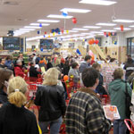
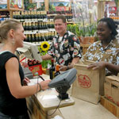
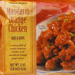
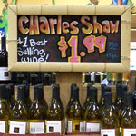
2000
We opened our first two Midwest stores. One in Chicagoland in Glen Ellyn, Il & one in Northbrook, Il. On the same day.
2001
Price scanners were (finally) installed for quicker checkout.
2002
The first bottles of Charles Shaw wines were sold in Trader Joe’s stores. A fast customer favorite and winner of medals in many competitions, it earned the endearing moniker, “Two Buck Chuck.”
2004
A spontaneous round of karaoke breaks out in the frozen aisle of our Oceanside store.
We brought Mandarin Orange Chicken, a popular restaurant recipe, right to the home kitchen. The response was wild. We could barely keep in stock. But we just kept cooking, so you could too.
2006
“Start spreading the news...” Trader Joe’s opened in downtown Manhattan on St. Patrick’s Day. Our very first customer bought an energy bar - that’s it. Later that year... Trader Joe’s entered the southeast, a region known for its distinctive cuisine (makes sense), opened a store in Roswell, GA, followed shortly by Cary, NC.
2007
Trader Joe’s made a commitment to eliminate artificial trans fats from all private label products (along with artificial colors, flavors, preservatives & GMO ingredients... but that’s old news by now).
2009
Trader Joe’s included a timeline on the website.
2010s
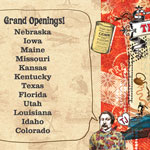
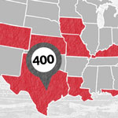
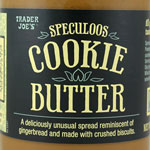
2010
From the states of Cornhuskers and Hawkeyes to the one and only Vacationland, Trader Joe’s continues to open new stores in new regions (Nebraska, Iowa & Maine).
2011
Kansas City captured our hearts. We liked both sides so much; in fact, we opened stores in both Missouri and Kansas.
Kentucky: where you can find bluegrass, bourbon, and now a Trader Joe’s.
2012
Looking for great “Friendship,” we opened our 1st Texas Store. And our 2nd. And our 3rd. And our 4th. And our 5th.
And we let the Sunshine in – that is, it let us in...Trader Joe’s opens in Florida.
As busy as bees this year, we also enter Utah (the Beehive state).
Cookie Butter. It's the best thing since... It's the best thing.
2013
Trick-or-treat? Treat – Trader Joe’s opens its first store in Louisiana, in Baton Rouge, on Halloween.
Trader Joe’s hits 400 (stores), “keeping it weird” in Austin, TX.
2014
Trader Joe’s introduces National APPetizer Day on January 28th. There were lots of yummy finger foods and a new phone app, also for your fingers.
We've been west, east, north, even south, and finally we are "in" the Rocky Mountains as we open stores in both Idaho and Colorado.
Gracing the airwaves with our quirky product tales for 30 years now – really, no really, “Thanks for listening.”